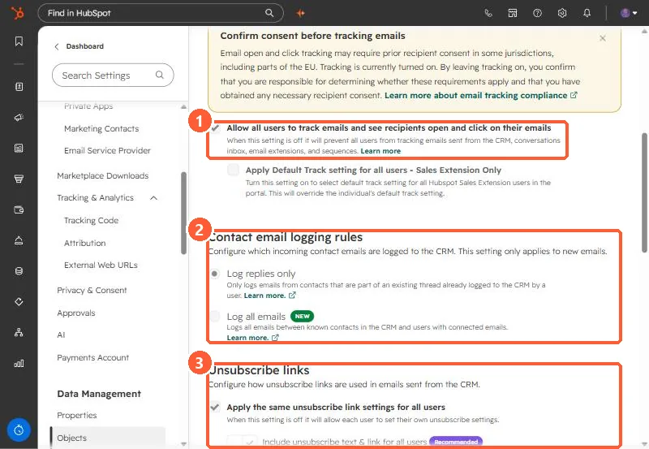

Short answer
Under Contact email logging rules, Log replies only logs a contact's email only if it is part of a thread a user already logged. A new email from a contact does not log. Log all emails logs all emails between known contacts and users with connected inboxes. HubSpot calls Log all emails the default, but my demo is set to Log replies only. The setting only applies to new emails.
1. The logging rules
Open Activities settings and scroll to Contact email logging rules.


2. What each rule logs
- Log replies only. A reply logs only if the original was logged from the CRM or the Sales extension with Log ticked, it was not sent to a never log address, the inbox is still connected, the user is active, and the subject line matches.
- Log all emails. Emails to and from existing contacts log for users with connected inboxes, including emails sent outside HubSpot. Emails to people who are not contacts do not log.
- HubSpot also lists a beta option that creates new contacts from incoming emails.
3. Unsubscribe links
Below the rules, Apply the same unsubscribe link settings for all users is on in my demo, with the recommended option to include unsubscribe text and a link in CRM emails. To stop specific addresses logging, see the never log list.